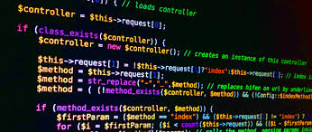
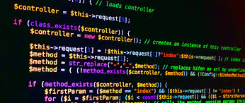

<?php for ($variable=valor_inicial; condición; incremento) { ... sentencias; } ?<
<?php while (condición) { ... sentencias; } ?<
<?php do { …sentencias } while(condición); ?< EJEMPLO DE FOR: <html> <head> <title>Problema</title> </head> <body> <?php for ($f = 1; $f <= 100; $f++) { echo $f; echo ""; } ?> </body> </html> EJEMPLO DE ESTRUCTURA While:: <html> <head> <title>Problema</title> </head> <body> <?php $valor = rand(1, 100); $inicio = 1; while ($inicio <= $valor) { echo $inicio; echo ""; $inicio++; } ?> </body> </html>  EJEMPLO DE ESTRUCTURA do/while:: <html> <head> <title>Problema</title> </head> <body> <?php do { if ($i < 5) { echo "i no es lo suficientemente grande"; break; } $i *= $factor; if ($i < $minimum_limit) { break; } echo "i está bien"; /* procesar i */ } while (0); ?> </body> </html>
<?php do { …sentencias } while(condición); ?<
<html> <head> <title>Problema</title> </head> <body> <?php for ($f = 1; $f <= 100; $f++) { echo $f; echo ""; } ?> </body> </html>
<html> <head> <title>Problema</title> </head> <body> <?php $valor = rand(1, 100); $inicio = 1; while ($inicio <= $valor) { echo $inicio; echo ""; $inicio++; } ?> </body> </html>

<html> <head> <title>Problema</title> </head> <body> <?php do { if ($i < 5) { echo "i no es lo suficientemente grande"; break; } $i *= $factor; if ($i < $minimum_limit) { break; } echo "i está bien"; /* procesar i */ } while (0); ?> </body> </html>